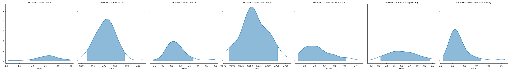
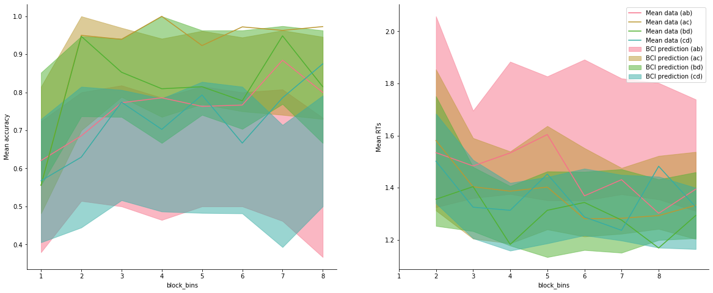

[1]:
import rlssm
import pandas as pd
import os
/Users/Khamir/opt/anaconda3/lib/python3.7/site-packages/statsmodels/tools/_testing.py:19: FutureWarning: pandas.util.testing is deprecated. Use the functions in the public API at pandas.testing instead.
import pandas.util.testing as tm
[2]:
par_path = os.path.abspath(os.path.join(os.getcwd(), os.pardir))
data_path = os.path.join(par_path, 'data/data_experiment.csv')
data = pd.read_csv(data_path, index_col=0)
data = data[data.participant < 5].reset_index(drop=True)
data['block_label'] += 1
data
INFO:numexpr.utils:NumExpr defaulting to 4 threads.
[2]:
| participant | block_label | trial_block | f_cor | f_inc | cor_option | inc_option | times_seen | rt | accuracy | |
|---|---|---|---|---|---|---|---|---|---|---|
| 0 | 1 | 1.0 | 1.0 | 43.0 | 39.0 | 2 | 1 | 1.0 | 1.244082 | 0.0 |
| 1 | 1 | 1.0 | 2.0 | 60.0 | 50.0 | 4 | 3 | 1.0 | 1.101821 | 1.0 |
| 2 | 1 | 1.0 | 3.0 | 44.0 | 36.0 | 4 | 2 | 2.0 | 1.029923 | 0.0 |
| 3 | 1 | 1.0 | 4.0 | 55.0 | 55.0 | 4 | 3 | 2.5 | 1.368007 | 0.0 |
| 4 | 1 | 1.0 | 5.0 | 52.0 | 49.0 | 4 | 3 | 3.5 | 1.039329 | 1.0 |
| ... | ... | ... | ... | ... | ... | ... | ... | ... | ... | ... |
| 953 | 4 | 3.0 | 75.0 | 51.0 | 44.0 | 3 | 1 | 37.0 | 1.396425 | 1.0 |
| 954 | 4 | 3.0 | 76.0 | 57.0 | 33.0 | 3 | 1 | 38.0 | 1.208049 | 1.0 |
| 955 | 4 | 3.0 | 77.0 | 42.0 | 30.0 | 3 | 1 | 39.0 | 1.276406 | 1.0 |
| 956 | 4 | 3.0 | 78.0 | 41.0 | 42.0 | 2 | 1 | 38.5 | 1.530143 | 0.0 |
| 957 | 4 | 3.0 | 79.0 | 46.0 | 36.0 | 4 | 2 | 39.5 | 1.269675 | 1.0 |
958 rows × 10 columns
[3]:
model = rlssm.RLLBAModel_2A(2,
separate_learning_rates=True,
nonlinear_mapping=True)
INFO:pystan:COMPILING THE C++ CODE FOR MODEL anon_model_0fb2bb51bfa51dd200d9ec4ee92cb88c NOW.
[4]:
model.family, model.model_label, model.hierarchical_levels
[4]:
('RLLBA_2A', 'hierRLLBA_2A_2lr_nonlin', 2)
Fit¶
[5]:
# sampling parameters
n_iter = 700
n_chains = 2
n_thin = 5
# learning parameters
K = 4 # n options
initial_value_learning = 17.5 # intitial value (Q0)
[6]:
model_fit = model.fit(data,
K,
initial_value_learning,
thin = n_thin,
iter = n_iter,
chains = n_chains,
print_diagnostics = False)
WARNING:pystan:Maximum (flat) parameter count (1000) exceeded: skipping diagnostic tests for n_eff and Rhat.
To run all diagnostics call pystan.check_hmc_diagnostics(fit)
WARNING:pystan:2 of 140 iterations ended with a divergence (1.43 %).
WARNING:pystan:Try running with adapt_delta larger than 0.8 to remove the divergences.
Get Rhat¶
[7]:
model_fit.rhat.describe()
[7]:
| rhat | |
|---|---|
| count | 42.000000 |
| mean | 1.005555 |
| std | 0.013878 |
| min | 0.986226 |
| 25% | 0.994396 |
| 50% | 1.003811 |
| 75% | 1.014709 |
| max | 1.050946 |
[8]:
model_fit.rhat.head()
[8]:
| rhat | variable | |
|---|---|---|
| 0 | 1.005682 | mu_k |
| 1 | 1.020226 | mu_A |
| 2 | 0.988785 | mu_tau |
| 3 | 0.989849 | mu_utility |
| 4 | 1.019746 | mu_alpha_pos |
Calculate wAIC¶
[9]:
model_fit.waic
[9]:
{'lppd': -643.8819576260746,
'p_waic': 16.690083096837167,
'waic': 1321.1440814458235,
'waic_se': 70.65677993547321}
Check divergences¶
[ ]:
Get posteriors¶
[10]:
model_fit.samples
[10]:
| chain | draw | transf_mu_k | transf_mu_A | transf_mu_tau | transf_mu_utility | transf_mu_alpha_pos | transf_mu_alpha_neg | transf_mu_drift_scaling | k_sbj[1] | ... | alpha_pos_sbj[3] | alpha_pos_sbj[4] | alpha_neg_sbj[1] | alpha_neg_sbj[2] | alpha_neg_sbj[3] | alpha_neg_sbj[4] | drift_scaling_sbj[1] | drift_scaling_sbj[2] | drift_scaling_sbj[3] | drift_scaling_sbj[4] | |
|---|---|---|---|---|---|---|---|---|---|---|---|---|---|---|---|---|---|---|---|---|---|
| 0 | 0 | 9 | 2.218216 | 0.746467 | 0.485235 | 0.693135 | 0.394405 | 0.476540 | 0.345808 | 2.226319 | ... | 0.430719 | 0.516551 | 0.465420 | 0.472362 | 0.473114 | 0.457863 | 0.148265 | 0.353958 | 0.232933 | 0.070899 |
| 1 | 0 | 52 | 2.842658 | 0.735826 | 0.287528 | 0.612379 | 0.263671 | 0.644251 | 0.289795 | 3.003439 | ... | 0.240302 | 0.244487 | 0.640299 | 0.645579 | 0.641937 | 0.661543 | 0.296683 | 0.276875 | 0.330955 | 0.267026 |
| 2 | 0 | 57 | 2.731579 | 0.678422 | 0.336908 | 0.669535 | 0.172269 | 0.810516 | 0.193189 | 2.601803 | ... | 0.173695 | 0.199894 | 0.819343 | 0.785726 | 0.803066 | 0.809337 | 0.223272 | 0.209809 | 0.217731 | 0.163061 |
| 3 | 0 | 41 | 2.791303 | 0.790856 | 0.334079 | 0.668357 | 0.219365 | 0.816318 | 0.183288 | 2.873633 | ... | 0.196379 | 0.177374 | 0.800013 | 0.791071 | 0.785466 | 0.794383 | 0.161155 | 0.643886 | 0.131647 | 0.075777 |
| 4 | 0 | 17 | 1.633822 | 0.661593 | 0.226324 | 0.630948 | 0.372523 | 0.331318 | 0.255643 | 3.436688 | ... | 0.344104 | 0.362389 | 0.307234 | 0.324162 | 0.312601 | 0.331165 | 0.266758 | 0.240318 | 0.269478 | 0.223147 |
| ... | ... | ... | ... | ... | ... | ... | ... | ... | ... | ... | ... | ... | ... | ... | ... | ... | ... | ... | ... | ... | ... |
| 135 | 1 | 19 | 2.497554 | 0.674339 | 0.159015 | 0.675060 | 0.228589 | 0.894061 | 0.143674 | 2.626628 | ... | 0.177725 | 0.208053 | 0.895406 | 0.909279 | 0.893039 | 0.885036 | 0.172320 | 0.295264 | 0.195957 | 0.247374 |
| 136 | 1 | 29 | 3.203971 | 0.694095 | 0.204260 | 0.590805 | 0.325917 | 0.317780 | 0.262920 | 3.201770 | ... | 0.266247 | 0.324119 | 0.341559 | 0.313943 | 0.321068 | 0.344810 | 0.201104 | 0.385478 | 0.341611 | 0.190098 |
| 137 | 1 | 24 | 2.957967 | 0.695074 | 0.356387 | 0.658315 | 0.522327 | 0.359127 | 0.266369 | 2.954014 | ... | 0.560326 | 0.535251 | 0.349920 | 0.346014 | 0.358318 | 0.370704 | 0.221486 | 0.283460 | 0.230941 | 0.135635 |
| 138 | 1 | 22 | 2.132214 | 0.731655 | 0.365446 | 0.692880 | 0.228873 | 0.669432 | 0.235406 | 2.133542 | ... | 0.194908 | 0.202080 | 0.728476 | 0.628200 | 0.686748 | 0.667976 | 0.174453 | 0.178791 | 0.184725 | 0.160846 |
| 139 | 1 | 8 | 2.523199 | 0.671597 | 0.312031 | 0.710819 | 0.274099 | 0.613046 | 0.207411 | 2.730862 | ... | 0.228577 | 0.289829 | 0.619863 | 0.629289 | 0.613585 | 0.598442 | 0.200520 | 0.209758 | 0.212851 | 0.140609 |
140 rows × 37 columns
[11]:
model_fit.trial_samples
[11]:
OrderedDict([('k_t',
array([[2.22631866, 2.22631866, 2.22631866, ..., 2.24364107, 2.24364107,
2.24364107],
[3.0034394 , 3.0034394 , 3.0034394 , ..., 2.94278496, 2.94278496,
2.94278496],
[2.60180312, 2.60180312, 2.60180312, ..., 2.72707088, 2.72707088,
2.72707088],
...,
[2.9540138 , 2.9540138 , 2.9540138 , ..., 2.93860169, 2.93860169,
2.93860169],
[2.13354218, 2.13354218, 2.13354218, ..., 2.26137879, 2.26137879,
2.26137879],
[2.73086168, 2.73086168, 2.73086168, ..., 2.68258776, 2.68258776,
2.68258776]])),
('A_t',
array([[0.52577251, 0.52577251, 0.52577251, ..., 0.98918845, 0.98918845,
0.98918845],
[0.69960155, 0.69960155, 0.69960155, ..., 1.40385502, 1.40385502,
1.40385502],
[1.23337422, 1.23337422, 1.23337422, ..., 1.98078776, 1.98078776,
1.98078776],
...,
[0.89205177, 0.89205177, 0.89205177, ..., 0.96025028, 0.96025028,
0.96025028],
[0.5009003 , 0.5009003 , 0.5009003 , ..., 1.48292132, 1.48292132,
1.48292132],
[0.64627554, 0.64627554, 0.64627554, ..., 1.35304339, 1.35304339,
1.35304339]])),
('tau_t',
array([[0.47017257, 0.47017257, 0.47017257, ..., 0.29073192, 0.29073192,
0.29073192],
[0.34516964, 0.34516964, 0.34516964, ..., 0.20188609, 0.20188609,
0.20188609],
[0.37147914, 0.37147914, 0.37147914, ..., 0.18409695, 0.18409695,
0.18409695],
...,
[0.35164858, 0.35164858, 0.35164858, ..., 0.19798235, 0.19798235,
0.19798235],
[0.46671774, 0.46671774, 0.46671774, ..., 0.33433303, 0.33433303,
0.33433303],
[0.39620419, 0.39620419, 0.39620419, ..., 0.17232147, 0.17232147,
0.17232147]])),
('drift_cor_t',
array([[1.25178499, 1.25178499, 2.5840363 , ..., 2.47348632, 1.96016683,
2.52485809],
[1.72742354, 1.72742354, 2.49157482, ..., 3.18692825, 2.61320114,
3.23748237],
[1.58547612, 1.58547612, 2.10794037, ..., 3.04955771, 2.3747942 ,
3.11755937],
...,
[1.58332196, 1.58332196, 3.11601638, ..., 2.82039784, 2.3192765 ,
2.89123294],
[1.30932935, 1.30932935, 1.72426849, ..., 2.95108337, 2.33253107,
3.01396395],
[1.49817139, 1.49817139, 2.26702428, ..., 2.64775593, 2.11579236,
2.70073539]])),
('drift_inc_t',
array([[1.25178499, 1.25178499, 1.46680627, ..., 0.93009291, 1.05514253,
1.15370412],
[1.72742354, 1.72742354, 1.84894562, ..., 1.44866121, 1.72000432,
1.81088744],
[1.58547612, 1.58547612, 1.66485705, ..., 1.18625092, 1.47845082,
1.52782545],
...,
[1.58332196, 1.58332196, 1.8375104 , ..., 1.30184474, 1.44554549,
1.50564869],
[1.30932935, 1.30932935, 1.37192717, ..., 1.18021462, 1.45328338,
1.52314596],
[1.49817139, 1.49817139, 1.61759409, ..., 1.06761331, 1.27799694,
1.37221201]]))])
[12]:
model_fit.plot_posteriors(height=5, show_intervals='HDI');

[ ]:
Posterior predictives¶
[13]:
import numpy as np
import seaborn as sns
[14]:
data['choice_pair'] = 'AB'
data.loc[(data.cor_option == 3) & (data.inc_option == 1), 'choice_pair'] = 'AC'
data.loc[(data.cor_option == 4) & (data.inc_option == 2), 'choice_pair'] = 'BD'
data.loc[(data.cor_option == 4) & (data.inc_option == 3), 'choice_pair'] = 'CD'
data['block_bins'] = pd.cut(data.trial_block, 8, labels=np.arange(1, 9))
[15]:
data.head()
[15]:
| index | participant | block_label | trial_block | f_cor | f_inc | cor_option | inc_option | times_seen | rt | accuracy | accuracy_rescale | choice_pair | block_bins | |
|---|---|---|---|---|---|---|---|---|---|---|---|---|---|---|
| 0 | 0 | 1 | 1.0 | 1.0 | 43.0 | 39.0 | 2 | 1 | 1.0 | 1.244082 | 0.0 | 2 | AB | 1 |
| 1 | 1 | 1 | 1.0 | 2.0 | 60.0 | 50.0 | 4 | 3 | 1.0 | 1.101821 | 1.0 | 1 | CD | 1 |
| 2 | 2 | 1 | 1.0 | 3.0 | 44.0 | 36.0 | 4 | 2 | 2.0 | 1.029923 | 0.0 | 2 | BD | 1 |
| 3 | 3 | 1 | 1.0 | 4.0 | 55.0 | 55.0 | 4 | 3 | 2.5 | 1.368007 | 0.0 | 2 | CD | 1 |
| 4 | 4 | 1 | 1.0 | 5.0 | 52.0 | 49.0 | 4 | 3 | 3.5 | 1.039329 | 1.0 | 1 | CD | 1 |
Ungrouped posterior predictives:¶
[16]:
pp = model_fit.get_posterior_predictives_df(n_posterior_predictives=100)
pp.head()
[16]:
| variable | rt | ... | accuracy | ||||||||||||||||||
|---|---|---|---|---|---|---|---|---|---|---|---|---|---|---|---|---|---|---|---|---|---|
| trial | 1 | 2 | 3 | 4 | 5 | 6 | 7 | 8 | 9 | 10 | ... | 949 | 950 | 951 | 952 | 953 | 954 | 955 | 956 | 957 | 958 |
| sample | |||||||||||||||||||||
| 1 | 1.476054 | 4.501933 | 1.146258 | 1.608569 | 1.518163 | 1.086897 | 1.088283 | 1.378473 | 1.008067 | 1.330888 | ... | 1.0 | 1.0 | 1.0 | 1.0 | 1.0 | 0.0 | 0.0 | 1.0 | 1.0 | 1.0 |
| 2 | 4.810980 | 1.350788 | 1.652765 | 1.293510 | 1.391421 | 1.094286 | 1.321991 | 1.814132 | 1.124208 | 1.266980 | ... | 0.0 | 1.0 | 0.0 | 1.0 | 1.0 | 1.0 | 0.0 | 1.0 | 1.0 | 1.0 |
| 3 | 2.492401 | 1.439167 | 2.839662 | 2.208994 | 1.928259 | 1.769389 | 1.553615 | 1.634681 | 1.079522 | 1.463810 | ... | 1.0 | 1.0 | 0.0 | 1.0 | 1.0 | 1.0 | 1.0 | 1.0 | 0.0 | 1.0 |
| 4 | 6.737038 | 1.899349 | 1.768718 | 1.314249 | 0.965805 | 1.088841 | 1.236726 | 1.249866 | 1.482060 | 1.119628 | ... | 1.0 | 0.0 | 0.0 | 1.0 | 1.0 | 1.0 | 1.0 | 1.0 | 0.0 | 1.0 |
| 5 | 4.531547 | 1.863836 | 1.693630 | 1.539494 | 1.599149 | 1.443646 | 1.412527 | 1.686905 | 1.338063 | 1.422913 | ... | 1.0 | 0.0 | 0.0 | 1.0 | 1.0 | 1.0 | 1.0 | 0.0 | 1.0 | 1.0 |
5 rows × 1916 columns
Grouped posterior predictives:¶
[17]:
pp_grouped = model_fit.get_grouped_posterior_predictives_summary(grouping_vars=['choice_pair', 'block_bins'],
n_posterior_predictives=100)
[18]:
pp_grouped.head()
[18]:
| mean_accuracy | mean_rt | skewness | quant_10_rt_incorrect | quant_10_rt_correct | quant_30_rt_incorrect | quant_30_rt_correct | quant_50_rt_incorrect | quant_50_rt_correct | quant_70_rt_incorrect | quant_70_rt_correct | quant_90_rt_incorrect | quant_90_rt_correct | |||
|---|---|---|---|---|---|---|---|---|---|---|---|---|---|---|---|
| choice_pair | block_bins | sample | |||||||||||||
| AB | 1 | 1 | 0.482759 | 1.771073 | 2.595744 | 1.160566 | 1.040399 | 1.222528 | 1.168553 | 1.605475 | 1.275907 | 1.750383 | 1.419784 | 3.408895 | 2.578331 |
| 2 | 0.689655 | 1.408442 | 0.727124 | 0.965731 | 1.072327 | 1.181709 | 1.203693 | 1.213450 | 1.399032 | 1.338849 | 1.617281 | 1.690790 | 1.880986 | ||
| 3 | 0.413793 | 1.901473 | 1.980196 | 0.959460 | 1.485412 | 1.359451 | 1.639556 | 1.538509 | 1.753198 | 1.934357 | 2.522451 | 2.336311 | 2.751352 | ||
| 4 | 0.655172 | 1.876607 | 2.016689 | 1.134736 | 1.036091 | 1.181817 | 1.143421 | 1.309251 | 1.551890 | 1.539614 | 1.964199 | 2.642390 | 3.378674 | ||
| 5 | 0.448276 | 1.578761 | 0.986869 | 1.211548 | 1.087808 | 1.500704 | 1.123081 | 1.780765 | 1.176192 | 2.121146 | 1.304009 | 2.486926 | 1.482917 |
Plot grouped posterior predictives:¶
[19]:
model_fit.plot_mean_grouped_posterior_predictives(
grouping_vars=['block_bins', 'choice_pair'],
n_posterior_predictives=300,
figsize=(20,8),
hue_labels=['ab', 'ac', 'bd', 'cd'],
hue_order=['AB', 'AC', 'BD', 'CD'],
palette= sns.color_palette('husl'));
/Users/Khamir/DecisionMaking/_Reports/_7/rlssm/rlssm/Race_fits.py:249: UserWarning: Cannot have more posterior predictive samples than posterior samples. Will continue with n_posterior_predictives=140
pp_rt, pp_acc = self.get_posterior_predictives(n_posterior_predictives, **kwargs)

[20]:
model_fit.plot_mean_grouped_posterior_predictives(
grouping_vars=['block_bins'],
n_posterior_predictives=300,
figsize=(20,8));
/Users/Khamir/DecisionMaking/_Reports/_7/rlssm/rlssm/Race_fits.py:249: UserWarning: Cannot have more posterior predictive samples than posterior samples. Will continue with n_posterior_predictives=140
pp_rt, pp_acc = self.get_posterior_predictives(n_posterior_predictives, **kwargs)

Get starting values for further sampling¶
[21]:
sv = model_fit.last_values
sv
[21]:
| chain | draw | warmup | mu_A | mu_alpha_neg | mu_alpha_pos | mu_drift_scaling | mu_k | mu_tau | mu_utility | ... | z_k[3] | z_k[4] | z_tau[1] | z_tau[2] | z_tau[3] | z_tau[4] | z_utility[1] | z_utility[2] | z_utility[3] | z_utility[4] | |
|---|---|---|---|---|---|---|---|---|---|---|---|---|---|---|---|---|---|---|---|---|---|
| 69 | 0 | 69 | 0 | -0.024060 | -0.366524 | -1.074964 | -1.128229 | 3.022115 | -1.270109 | -0.219801 | ... | -0.982688 | -0.238227 | 0.429679 | -0.340402 | 1.470062 | -0.519064 | 1.807007 | 0.045777 | 1.540086 | -1.621073 |
| 139 | 1 | 69 | 0 | 0.053569 | 0.141450 | -0.099692 | -1.176579 | 3.035171 | -1.069279 | -0.074011 | ... | 0.317727 | 0.258729 | 0.273415 | -0.804120 | 0.211012 | -0.593435 | 0.241542 | -1.301525 | 0.138169 | -0.837328 |
2 rows × 45 columns
[ ]: